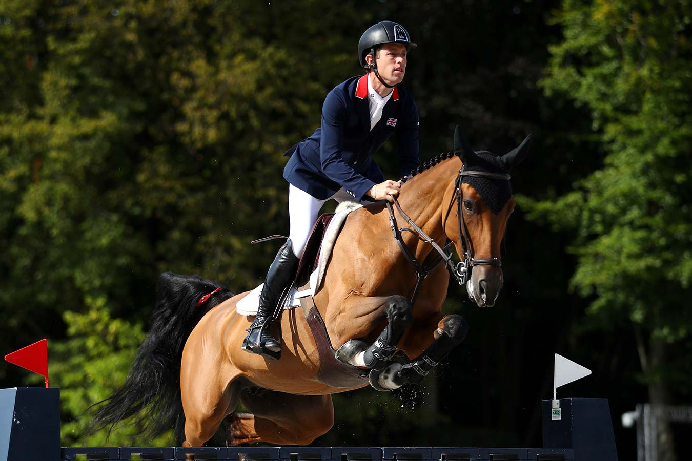

Тренеровка
Этапы и методы тренировки лошадей.
Воспитание и тренеровки
Запугать или заставить что-либо сделать лошадь нельзя. При таком подходе она в любой момент постарается отмстить обидчику или уклониться от нелюбимой работы. Однако, если приложить определенные усилия и запастись терпением, из этих животных можно сделать верных и надежных друзей, которые ради своего хозяина способны на очень многое. Доброе отношение к животному и постоянный труд на тренировках – в залог успешного общения с Вашим четвероногим питомцем. Далее мы расскажем об основных принципах тренинга лошадей и рассмотрим некоторые аспекты этого сложного и долгого процесса.
Именно грамотная дрессура и тренировки позволяют наладить контакт с животным и привести его к послушанию. Кроме того, когда у Вас есть такой сообразительный питомец, грех не воспользоваться его физическим и умственными способностями в полной мере. Разумеется, тренировочный процесс – дело непростое, и требует от заводчика не только определенных навыков и знаний, но также массу терпения и времени. Однако, не пожалев сил на этом этапе, в результаты Вы получите преданного и умного друга, который понимает Вас почти без слов!
Регулярные тренировки, проводимые по определенной системе, также полезны по следующим причинам: тренинг позволяет развить физические характеристики лошади. Эти, изначально сильные, животные, при грамотном подходе к физическим нагрузкам, способны достигнуть невероятных физических кондиций. Тренированные кони гораздо быстрее, сильнее, ловчее и выносливее своих необученных соплеменников. Кроме того, специалисты отмечают, что животные, с которыми регулярно занимаются физическими упражнениями, болеют гораздо реже своих малоподвижных собратьев, и в целом обладают лучшим иммунитетом; тренировки способствуют налаживанию психологического контакта между питомцем и хозяином. Для многих коневодов именно этот фактор становится решающим. Все дело в том, что многие из нас, приближаясь к более крупному, чем мы сами, животному, испытывают психологический дискомфорт, опаску или даже страх. Регулярные совместные занятия в течение продолжительного периода времени помогают избавиться от чувства неуверенности и дают возможность почувствовать некоторое духовное единение со своим животным.
Выездка
Задача тренировок этого направления – научить животное выполнять неестественные для него в реальной жизни движения (прыжки на месте, скрещивание ног при ходьбе, пируэты и так далее). Методик существует много, и описывать их мы не будем. Скажем только, что «лошадиный балет», как часто называют эту конно-спортивную дисциплину, требует высочайшего уровня взаимопонимания между лошадью и наездником.